Building Cross-Platform Mobile Apps with Visual Studio, Apache Cordova, and Microsoft Azure
Overview
Apache Cordova is an open-source framework for developing cross-platform mobile apps using industry-standard technologies such as HTML5, CSS3, and JavaScript. It is especially useful in organizations that already have expertise developing Web apps. In Cordova, your app is basically built as a Web application, with the Cordova framework providing a platform-specific WebView control to render the user interface and a JavaScript API for accessing the features and APIs in the underlying operating system. Essentially, your app runs as an "app within an app" and enjoys access to a rich feature set that exceeds that of a traditional Web application.
The Visual Studio tools for Apache Cordova extend Visual Studio to support the development of Cordova apps that target Windows, iOS, and Android. These tools provide project templates for creating Cordova apps in JavaScript and TypeScript. The Visual Studio IDE is a powerful productivity tool, and it includes features such as syntax highlighting, Intellisense, GUI-facilitated project and plugin configuration, integrated source control, integrated debugging, and built-in deployment tooling.
Azure Mobile Apps are part of the Azure App Service platform-as-a-service offering and include numerous features that aid in the development of cross-platform mobile apps, including support for single sign-on, push notifications across a range of devices, offline syncing, and Easy Tables for back-end storage. If every great front end needs a great back end as well, Azure Mobile Apps are designed to make implementing rich server-side infrastructure as simple as possible.
In this lab, you will learn how to use Visual Studio 2017 and Apache Cordova to create cross-platform mobile apps. You will also deploy an Azure Mobile App to serve as a back end and learn how to use Cordova to access this service and extend your apps to the cloud.
Objectives
In this hands-on lab, you will learn how to:
- Create a new Cordova project in Visual Studio 2017
- Use Cordova Simulate to test Cordova apps
- Incorporate platform-specific resources in Cordova apps
- Use Cordova Plugins to access device functionality
- Connect Cordova apps to Azure Mobile App back ends
Prerequisites
The following are required to complete this hands-on lab:
Exercises
This hands-on lab includes the following exercises:
Estimated time to complete this lab: 60 minutes.
Exercise 1: Create a Cordova Project in Visual Studio
The Visual Studio Tools for Apache Cordova allow you to use Visual Studio 2017 to build, manage, and test Cordova apps that run on Android, iOS, and Windows. In this exercise, you will create a new Cordova project in Visual Studio and debug it using Cordova Simulate, which runs your app in a simulated environment in Google Chrome. You can learn more about Cordova Simulate at https://taco.visualstudio.com/en-us/docs/vs-taco-2017-cordova-simulate/.
Your Cordova app will run as an iOS app in Cordova Simulate, but if you want to deploy it to Apple's iOS emulator, to Apple devices, or to Apple's App Store, you must have a Mac running XCode.
-
Launch Visual Studio 2017 and create a new project by selecting File -> New -> Project.
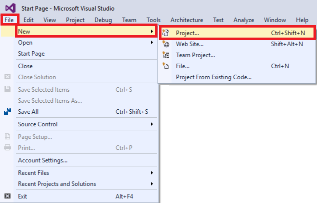
Creating a new project
-
In the "New Project" dialog, select Mobile Apps under JavaScript. (Note that JavaScript may be listed directly under the Templates node, or it may be under Other Languages, depending on how Visual Studio is configured.) Select Blank App (Apache Cordova) as the project type and enter "BasicCordovaApp" as the project name. Then click OK.

Setting up the project
-
Take a moment to examine the solution that was created. Key elements include:
- The Dependencies folder, which contains any Bower or NPM packages loaded into the project
- The merges folder, which contains files that pertain to specific platforms
- The res folder, which contains resources such as icons and splash-screen images
- The www folder, which contains HTML, CSS, and JavaScript assets, including the index.html file that serves as the app's home page
- Several files at the root level, including config.xml, which includes settings that Cordova uses to build and run your app
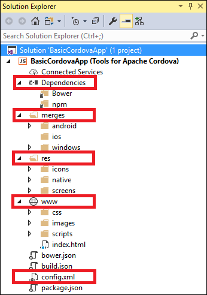
The Cordova solution
-
Select Build Solution from Visual Studio's Build menu to build the project.
The first time you build the project, Visual Studio will retrieve the Cordova runtime version that is specified in the project's config.xml file. Because of this, your first build will take a little extra time and requires an active Internet connection.
-
The next step is to run your Cordova app in Cordova Simulate with the Visual Studio debugger attached. Cordova Simulate supports Android and iOS applications, but it does not currently support Windows apps. To simulate your app on Android, click Simulate in Browser - Nexus 7 (Tablet).
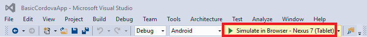
Launching the app in Cordova Simulate
-
Wait a few seconds for Google Chrome to open and show the running app.
If you are warned that "Windows Firewall has blocked some features of this app," click Allow access to allow the simulator to get through the firewall.

App running in Cordova Simulate
-
Return to Visual Studio and to the DOM Explorer that opened when you launched the app. DOM Explorer shows an interactive view of the app's HTML DOM (Document Object Model). It also allows you to make changes to the HTML and related style elements while your app is running and preview these changes in the user interface.

The DOM Explorer in Visual Studio
-
To demonstrate interactive changes in DOM Explorer, select the <p class="event received"> element highlighted on the left below. Then, in the "Styles" panel on the right, change the background-color attribute of the .event.received style selector to "blue." Now go back to the Chrome and examine the app. What changed, and why?
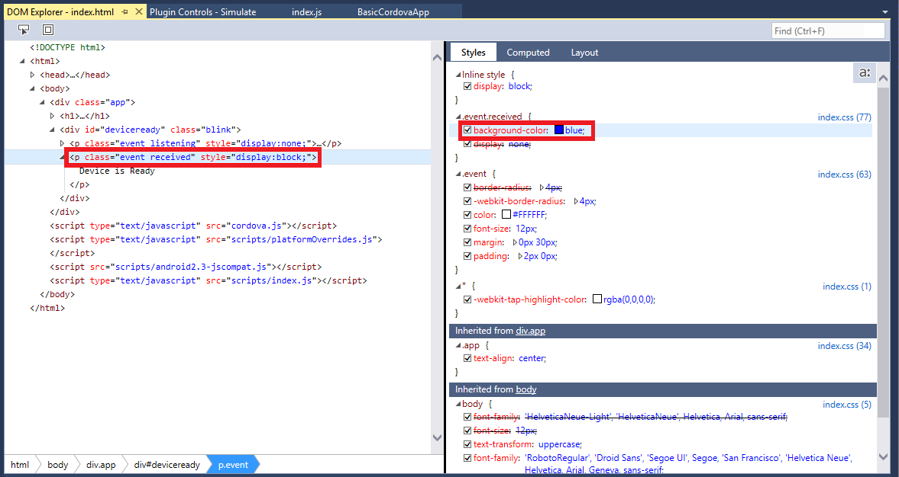
Modifying the DOM in DOM Explorer
-
Return to Visual Studio and select Stop Debugging from the Debug menu.
-
Next you will modify some of the JavaScript code in the app and learn how to use breakpoints to debug it. Begin by going to Solution Explorer and double-clicking the index.js file in the www/scripts folder to open it for editing. Then replace the existing onPause and onResume functions with the functions below:
function onPause() {
// TODO: This application has been suspended. Save application state here.
console.log("Pausing");
};
function onResume() {
// TODO: This application has been reactivated. Restore application state here.
console.log("Resuming");
};
-
Add a breakpoint to the console.log statement in onPause by putting the cursor on the line and pressing F9, or by cicking in the vertical bar to the left of the line number.
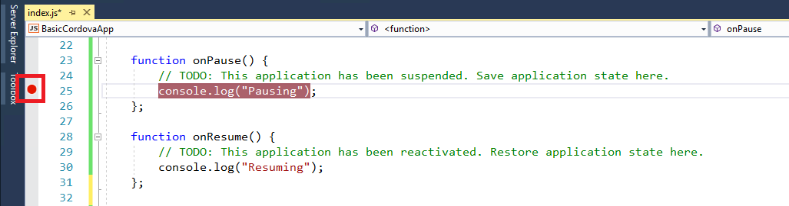
Setting a breakpoint
-
Select Start Debugging from the Debug menu (or press F5) to launch the application again.
-
Click the Plugin Controls - Simulate tab in Visual Studio and locate the "Events" panel. Select pause from the list of events, and then click Fire Event to simulate a pause event.
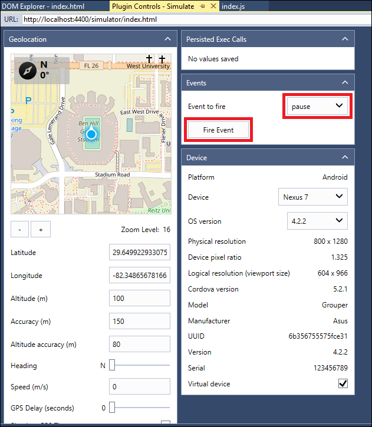
Simulating a pause event
-
Observe that Visual Studio pauses execution at the breakpoint you set in index.js. Resume execution by selecting Continue from the Debug menu , clicking the Continue button in the toolbar, or pressing F5, and notice that "Pausing" appears in the JavaScript console.

Hitting a breakpoint in Visual Studio
-
Simulate a resume event by returning to Plugin Controls - Simulate and selecting resume from the list of events and clicking the Fire Event button. Notice that "Resuming" appears in the JavaScript console.
pause and resume events are important markers in the lifetime of a Cordova app because they are fired by Cordova when execution of an app is paused or resumed. This gives you the opportunity to save the app's state when execution is paused, and restore it again when execution is resumed. This is important becaue many mobile operating systems pause an app when it exits the foreground and reserve the option of discarding the app's state in order to conserve memory. If state is discarded and the app fails to restore it in response to resume events, the user is liable to lose precious work simply by switching away from the app.
-
Select Stop Debugging from the Debug menu to stop debugging.
-
Click the breakpoint to remove it.
You now know how to create a Cordova project, how to launch it in Cordova Simulate, how to use DOM Explorer to view and even modify DOM elements, and how to perform basic debugging tasks. The next step is to begin customizing the app, and to learn how to incorporate platform-specific code.
Exercise 2: Add platform-specific code
Apache Cordova projects include the merges folder in order to support platform-specific elements. This is useful when you need to support different features on different platforms, or comply with design standards that differ from one platform to the next. In this exercise, you will modify the app you built in the previous exercise to show different content on different platforms.
The JavaScript that you write in this exercise will use jQuery to manipulate DOM content. Many Cordova apps use jQuery as well as other popular JavaScript libraries and frameworks such as AngularJS and Ionic.
-
Right-click the project in Solution Explorer and select Add -> New Item... to add a new file to the project. Select Text File as the file type and name the file .bowerrc. Then click the Add button.
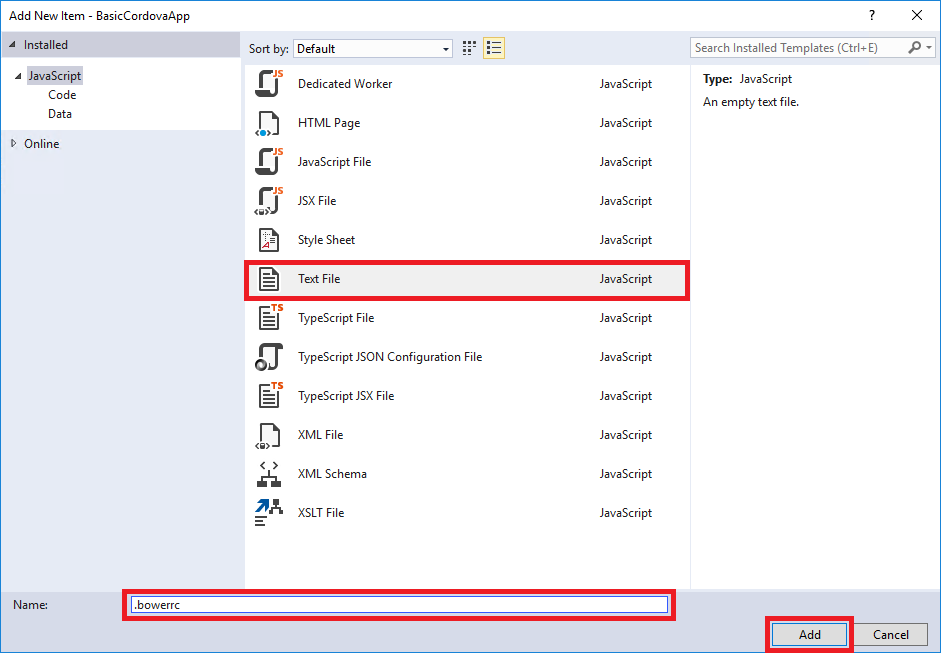
Adding .bowerrc to the project
-
Add the following JSON to the new file, and then save your changes:
{
"directory": "www/lib"
}
When you use Bower to import a JavaScript library, it often brings in a variety of files. You can either download the files to an intermediate location and individually copy just the files you want to your project — generally a manual process — or you can use the Bower configuration file to indicate which files to load. In this example, you are specifying that the entire Bower package contents should be downloaded to the app's www/lib folder.
-
Use the Build -> Build Solution command to build the project.
-
The next step is to use the Bower package manager to add jQuery to your project. Begin by selecting Manage Bower Packages... from the Project menu.
-
Click Browse. Then select jQuery and click the Install button on the right.
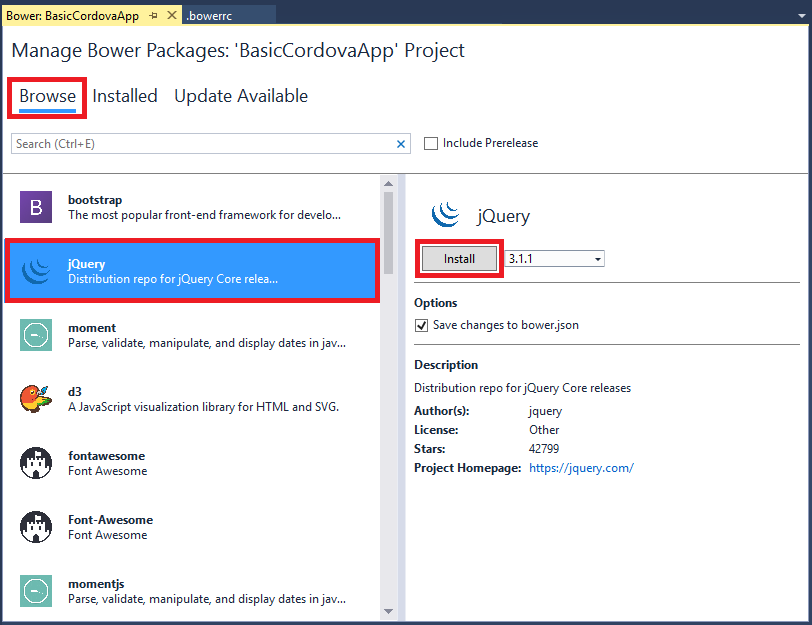
Including the jQuery Bower package
-
Open index.html, which is located in the project's www folder.
-
Add the following line of markup after the line that reads <h1>Apache Cordova</h1>:
<h2 id="ex2Platform">Override Platform</h2>
-
Add the following line before the first <script> element at the end of the file and save your changes to index.html:
<script type="text/javascript" src="lib/jquery/dist/jquery.js"></script>
-
In Solution Explorer, double-click the platformOverrides.js file in the merges/android/scripts folder to open it for editing.
As the path name implies, code added to this platformOverrides.js file will only be used when the app runs on Android.
-
Add the following line of code to the end of the self-executing function body to locate the element whose ID is "ex2Platform" and replace its contents with the word "Android," and then save the file:
$("#ex2Platform").html("Android");
-
Right-click the merges/iOS folder in Solution Explorer and select Add -> New Folder... from the context menu to add a new folder to the project. Name the new folder "scripts."
-
Right-click the scripts folder that you just created and select Add -> New Item... from the context menu.
-
In the ensuing dialog, select JavaScript File as the file type and name the file platformOverrides.js. Then click the Add button to add the file to the folder.
-
Add the following code, which locates the element whose ID is "ex2Platform" and replaces its contents with the word "iOS", to the platformOverrides.js file you just created. Then save the file.
(function () {
$("#ex2Platform").html("iOS");
} ());
-
The next step is to run the app on iOS and Android and see the effects of the per-platform code. Make sure that Android is selected in the drop-down list of platforms and one of the Simulate in Browser options is selected. Then click Simulate in Browser to run the app in Cordova Simulate.
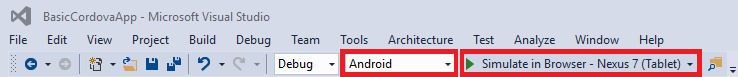
Simulating the app on Android
-
Confirm that the app displays "Android" as the platform name.
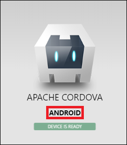
BasicCordovaApp running on Android
-
Return to Visual Studio and stop the debugger. Select iOS as the platform and make sure one of the Simulate in Browser options is selected. Then click Simulate in Browser to run the app in Cordova Simulate.

Simulating the app on iOS
-
Confirm that the app displays "iOS" as the platform name.
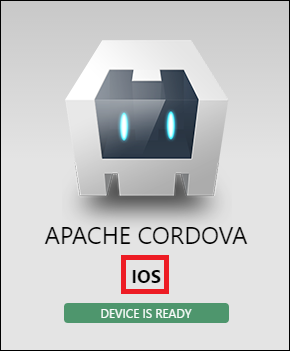
BasicCordovaApp running on iOS
-
Return to Visual Studio and stop the debugger.
Now that you know how to include platform-specific code in your app by placing it in platform-specific script files, it is time to learn about Cordova plugins — something that nearly every real-life Cordova app uses and that greatly speed the development process.
Exercise 3: Add a Cordova plugin
In Apache Cordova development, plugins provide access to native device capabilities that are outside the scope of what a traditional Web app can do. This includes access to device information, location information, accelerometers and other sensors, Bluetooth, and on-device data stores such as phone contacts and file systems. Plugins are cross-platform libraries that provide a JavaScript wrapper over the native code that implements the corresponding functionality.
Plugins are configured in the project's config.xml file. The Visual Studio Tools for Apache Cordova includes a list of predefined "core" plugins that can be selected from the designer UI. You can also add custom plugins that you download or write yourself. In this exercise, you will use the Device plugin to customize the UI with information about the operating system and device ID.
-
Start by locating the config.xml file in Solution Explorer. Double-click the file to open it in the Visual Studio designer.
-
Click Plugins and make sure Core is selected. Scroll through the the list of available core plugins and select the Device plugin. Then click the Add button to install the plugin.
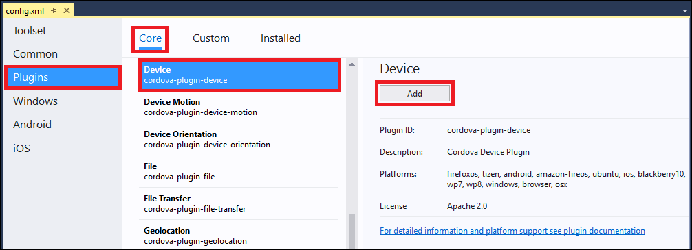
Installing the Device plugin
-
Return to the index.html file that you edited in the previous exercise. Below the <h2 id="ex2Platform">Override Platform</h2> element that you added in Exercise 2, add the following statements. Then save the file.
<h2 id="ex3Platform">Plugin Platform</h2>
<h2 id="ex3Id">Plugin Device ID</h2>
-
Reopen the index.js file in the *www/scripts folder. Add the following statements to the end of the onDeviceReady function. Then save the file.
var devicePlatform = device.platform;
var deviceId = device.uuid;
$("#ex3Platform").html(devicePlatform);
$("#ex3Id").html("ID: " + deviceId);
This code retrieves the Platform and UUID values from the Device plugin, and then updates the appropriate DOM elements with the values. The onDeviceReady function is called in response to the deviceready event, which is fired when the Cordova framework has been fully loaded and is ready to be used.
-
Select either Android or iOS in the platform drop-down and make sure that one of the Simulate in Browser options is selected. Then click Simulate in Browser to run the app in Cordova Simulate.
-
Confirm that a new platform value ("iOS" or "Android") is displayed underneath the one you added in Exercise 2, and that a device ID is displayed as well.
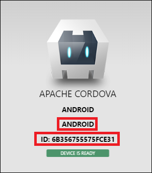
Output from the Device plugin
-
Return to Visual Studio and stop the debugger.
If you select a different platform and run the app again, the platform name and device ID should update accordingly.
Exercise 4: Deploy and connect to an Azure Mobile App
Azure Mobile Apps, which are part of the Azure App Service family of services, provide a convenient and powerful platform for adding back-end functionality to your Cordova apps. With Mobile Apps, you can create apps that store data in the cloud and support offline data synchronization, authentication and authorization, push notifications, and more. In this exercise, you will use Visual Studio to create a new Azure Mobile Apps instance. Then you will use the Mobile Apps Easy Tables feature to configure a database table and expose it through a REST endpoint.
-
In Solution Explorer, double-click Connected Services.
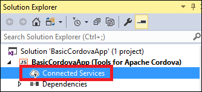
Opening Connected Services
-
Click Mobile Backend with Azure App Service Mobile App.
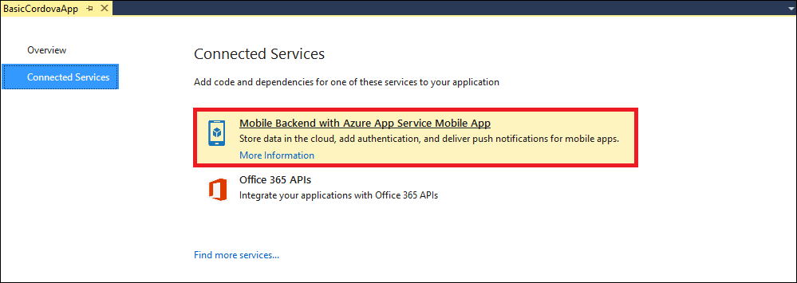
Adding a mobile back-end
-
In the "Azure Mobile Apps" dialog, click Create Service to create a new Azure Mobile App.
If you see an Add an Account button in the upper-right corner of the dialog, click it and sign in with a Microsoft account that has one or more Azure subscriptions associated with it before clicking Create service.
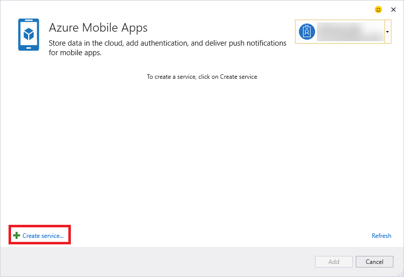
Creating an Azure Mobile App
-
In the "Hosting" section of the "Create App Service" dialog, accept the default value for Mobile App Name. Click the New... button next to Resource Group, enter "BasicCordovaApp" as the resource-group name, and click OK. Now click the New... button next to App Service Plan. In the "Configure Service Plan" dialog, accept the default name, set Location to the region closest to you, and set Size to Free. Then click the OK button to dismiss the dialog.
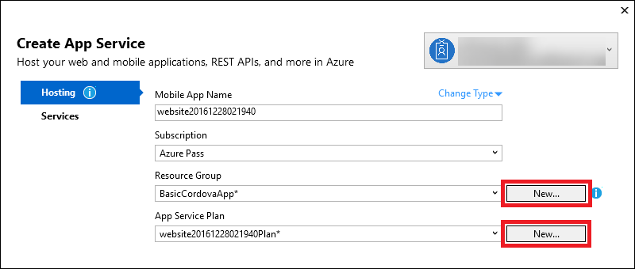
Configuring hosting options
-
Click Services, and then click the + sign next to SQL Database.
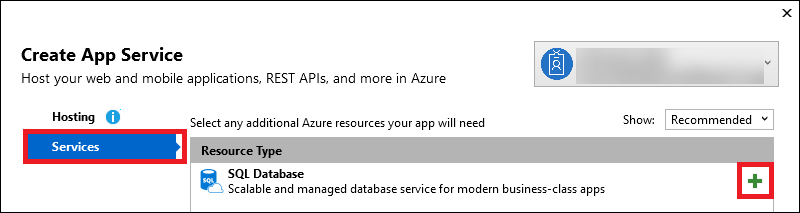
Adding a SQL database
-
In the "Configure SQL Database" dialog, click the New... button next to SQL Server. In the ensuing dialog, accept the default server name, enter "cordova" for the user name, and enter "c0rd0va!" (those are zeroes, not capital Os) for the password. Then click OK to dismiss the dialog. Back in the "Configure SQL Database" dialog, accept the default database name, change Connection String Name to "MS_TableConnectionString," and click the OK button.
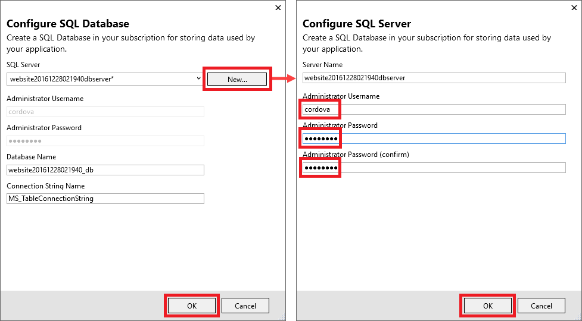
Configuring the SQL database and server
-
Click the Create button in the "Create App Service" dialog to start provisioning the Azure Mobile App.
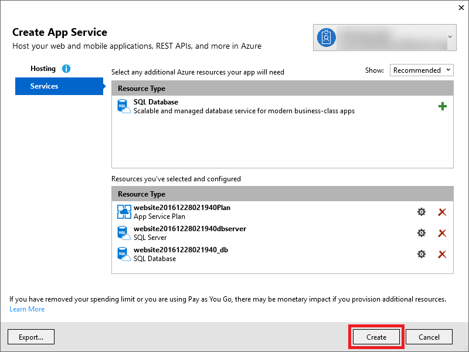
Creating the Mobile App
-
Wait for provisioning to complete. (It may take a couple of minutes. You can monitor its progress at the bottom of the "Create App Service" dialog.) When the "Azure Mobile Apps" dialog appears, make sure the service you created is selected, and then click the Add button. This will start the process of connecting your Cordova app to the Azure Mobile App, including:
- Installing the Azure Mobile Apps plugin in your Cordova project
- Adding a new JavaScript file to the www/services/mobileApps/setttings folder
- Adding a new
script element to index.html referencing the JavaScript file
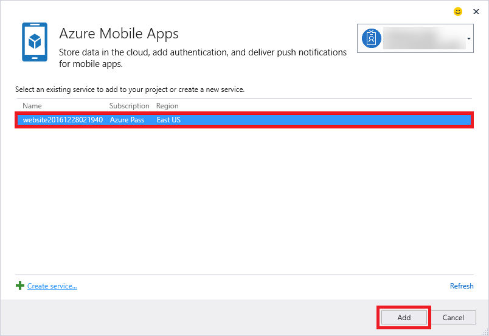
Configuring the project to connect to the Mobile App
-
The next step is to use the Azure Portal to configure the Azure Mobile App that serves as the back end for your Cordova app. This includes setting up Easy Tables, creating the database table in which your app will store data, and adding logic that will run on the server to validate user input. Begin by opening the Azure Portal in your browser. If you are asked to sign, do so with your Microsoft account.
-
In the portal, click Resource groups in the ribbon on the left. In the "Resource groups" blade, click BasicCordovaApp to open the resource group that holds the Azure Mobile App that you created.
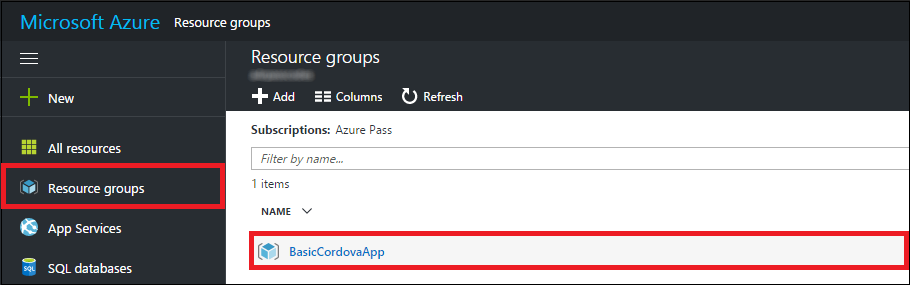
Opening the resource group
-
Click the App Service in the list of resources.
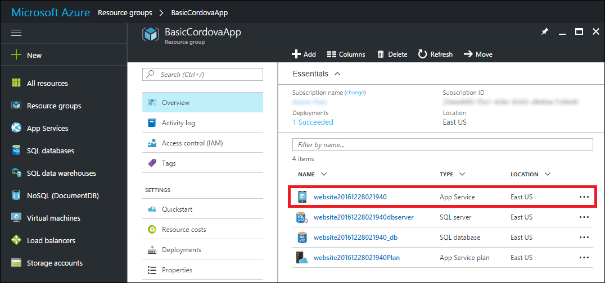
Opening the App Service
-
Scroll down the list of options on the left until you reach the "Mobile" section, and click Easy tables.
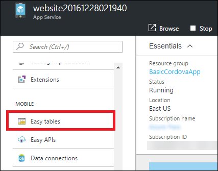
Configuring Easy Tables
-
Click Need to configure Easy Tables/Easy APIs - Click here to continue.
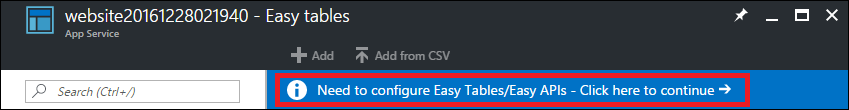
Configuring Easy Tables
-
Check the I acknowledge... box, and then click the Initialize App button.
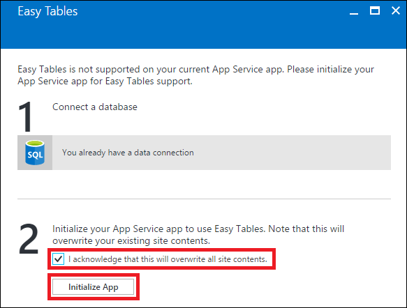
Adding Easy Tables
-
When the initialization completes, click + Add. Then type "scores" into the Name field and click the OK button at the bottom of the blade.
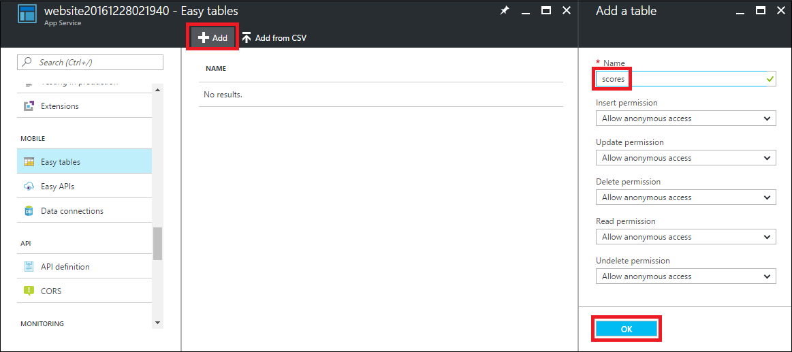
Adding a "scores" table
-
Click the "scores" table to open a blade for it, then click Edit script.
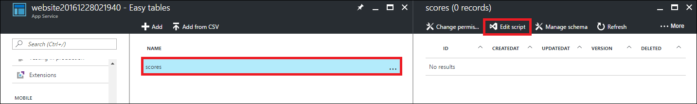
Editing the script for the "scores" table
-
Add the following code to the end of scores.js in the App Service Editor:
table.insert(function(context) {
if (context.item.homeTeamName !== context.item.awayTeamName){
return context.execute();
}
context.logger.error('Home Team and Away Team must be different.');
throw new Error('Home Team and Away Team must be different.');
});
This code validates user input by ensuring that the home team and away team names are different before committing to the database. You do not need to do anything special to save the code changes. Changes in the App Service Editor are saved as you go.
Exercise 5: Connect to the Azure Mobile App
Now that the Azure Mobile App has been deployed and configured, the next step is to connect to it from your app. In this exercise, you will connect to the Azure Mobile App and test the Cordova app with a cloud-based back end. But first, you will install the Cordova Notification plugin in your project so the app can display an error message if it is unable to connect to Azure.
-
Return to Visual Studio and open the config.xml file in the root of the project.
-
Click Plugins, scroll down and select the Notification plugin, and click the Add button.

Adding the Notification plugin
-
Open index.html in the project's www folder. Replace the existing content inside the <div class="app"> element with the following HTML, and then save the file:
<h1>Apache Cordova</h1>
<div id="newScore">
<div><label>Home Team: <input id="homeTeamName" type="text"></label></div>
<div><label>Home Score: <input id="homeTeamScore" type="text"></label></div>
<div><label>Away Team: <input id="awayTeamName" type="text"></label></div>
<div><label>Away Score: <input id="awayTeamScore" type="text"></label></div>
<button id="newScoreButton">Add Score</button>
</div>
<div id="scores">
<button id="getScoresButton">Refresh Scores</button>
<table>
<thead>
<tr>
<td>Home</td>
<td>Home Score</td>
<td>Away</td>
<td>Away Score</td>
</tr>
</thead>
<tbody></tbody>
</table>
</div>
-
Open index.js in the project's www/scripts folder. Replace the onDeviceReady function with this one, and then save the file:
function onDeviceReady() {
// Handle the Cordova pause and resume events
document.addEventListener( 'pause', onPause.bind( this ), false );
document.addEventListener( 'resume', onResume.bind( this ), false );
var cordovaLabClient = UPDATE_THIS_VALUE;
$("#getScoresButton").click(function () {
updateScores();
});
$("#newScoreButton").click(function () {
addNewScore();
});
function updateScores() {
// Get the scores from the service
var scoresTable = cordovaLabClient.getTable("scores");
scoresTable
.read()
.then(success, failure);
function success(results) {
// Access and clear the table content
$("#scores table > tbody").empty();
$.each(results, function (i, item) {
$('#scores table > tbody:last-child')
.append(
"<tr>" +
"<td>" + item.homeTeamName + "</td>" +
"<td>" + item.homeTeamScore + "</td>" +
"<td>" + item.awayTeamName + "</td>" +
"<td>" + item.awayTeamScore + "</td>" +
"</tr>");
});
}
function failure(error) {
throw new Error("Error loading data: ", error);
}
}
function addNewScore() {
// Get the values from the UI
// Post the value to the service
var scoreEntry = {
"homeTeamName": $("#homeTeamName").val(),
"homeTeamScore": $("#homeTeamScore").val(),
"awayTeamName": $("#awayTeamName").val(),
"awayTeamScore": $("#awayTeamScore").val(),
};
var scoresTable = cordovaLabClient.getTable("scores");
scoresTable
.insert(scoreEntry)
.done(insertSuccess, insertFailure);
function insertSuccess(result) {
if (result.error) {
navigator.notification.alert("Error inserting data: " + result.error);
return;
}
// Refresh the scores on success to pick up the new entry
updateScores();
};
function insertFailure(error) {
navigator.notification.alert("Error inserting data: " + result.error);
};
}
};The updateScores function calls out to the Azure Mobile App to retrieve values from the "scores" table, and then uses those values to update the user interface. The addNewScore function retrieves input from the user and then calls back to the Mobile App to record a new score. If the call succeeds, the function calls updateScores to ensure that the table is udpated with the new entry.
-
In Solution Explorer, open the script file in the project's www/services/mobileApps/settings folder. Copy the variable name on the first line (for example, website20170124044958Client) to the clipboard.
-
Return to index.js and replace UPDATE_THIS_VALUE on line 15 with the variable name on the clipboard.
-
Open index.css file in the project's www/css folder. Replace the style definition for the app class with the following statements:
.app {
background: url(../images/cordova.png) no-repeat center top;
position: absolute;
left: 50%;
height: 50px;
width: 225px;
text-align: center;
padding: 180px 0px 0px 0px;
margin: 10px 0px 0px -112px;
}
button {
margin: 2px;
}
-
Select either Android or iOS from the platform list. Then click Simulate in Browser to launch the app in the simulator.
Launching the app in Cordova Simulate
-
Enter the values shown below into the form fields, and then click the Add Score button.
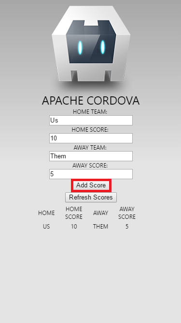
Submitting a score
-
Enter two or three more scores, using the same home team and away team or different ones if you prefer.
-
Now test the server-side validation logic by entering a score in which HOME TEAM and AWAY TEAM are both set to "Us" and clicking the Add Score button. Confirm that you see the error message below, which was displayed with help from the Notification plugin that you added to the project. Then click OK to dismiss the error dialog.
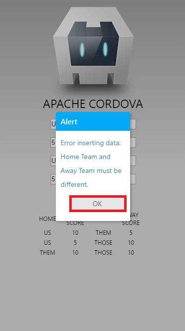
Error message displayed when validation fails
Congratulations! You have built a Cordova app that works cross-platform, deployed an Azure Mobile App to serve as a back end, connected to the Mobile App from your application, and demonstrated that it works. All that's left now is to delete the Azure Mobile App so it doesn't run up charges against your Azure subscription.
Exercise 6: Delete the Azure Mobile App
In this exercise, you will delete the resource group created in Exercise 4 when you deployed the Azure Mobile App. Deleting the resource group deletes everything in it and prevents any further charges from being incurred for it. Until you delete it, you will be charged for the App Service instance and for the Azure SQL database.
-
In the Azure Portal, open the blade for the "BasicCordovaApp" resource group.
Opening the resource group
-
Click the Delete button at the top of the blade.
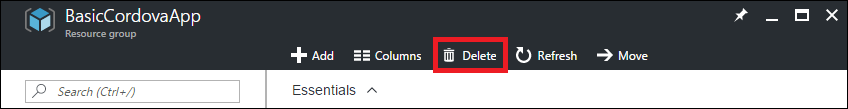
Deleting the resource group
-
For safety, you are required to type in the resource group's name. (Once deleted, a resource group cannot be recovered.) Type the name of the resource group. Then click the Delete button to remove all traces of this lab from your account.
After a few minutes, the resource group and all of its resources will be deleted.
Summary
In this hands-on lab, you learned how to:
- Create a new Cordova project in Visual Studio 2017
- Use Cordova Simulate to test Cordova apps
- Incorporate platform-specific resources in Cordova apps
- Use Cordova Plugins to access device functionality
- Connect Cordova apps to Azure Mobile App back ends
Visual Studio 2017 and the Visual Studio Tools for Apache Cordova provide a rich foundation developing cross-platform mobile apps using the Cordova framework. With these tools, you can quickly stand up, develop, manage, test, and debug Cordova apps on a variety of platforms using Cordova Simulate or other simulators. Furthermore, with Visual Studio's Azure integration, you can quickly deploy a cloud-hosted back end and use it to extend both the functionality and the reach of the apps that you write.
Copyright 2016 Microsoft Corporation. All rights reserved. Except where otherwise noted, these materials are licensed under the terms of the MIT License. You may use them according to the license as is most appropriate for your project. The terms of this license can be found at https://opensource.org/licenses/MIT.